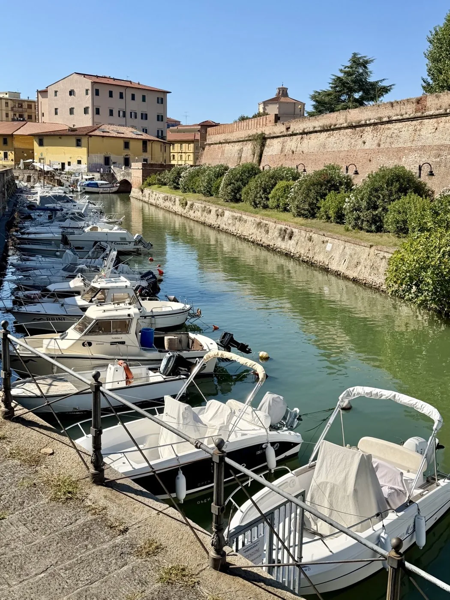
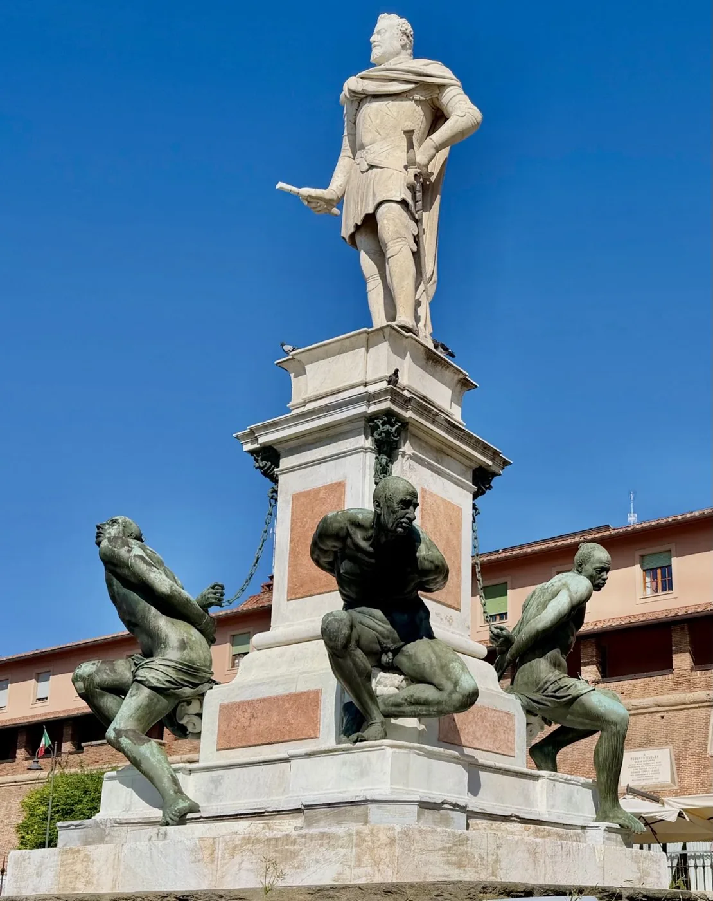
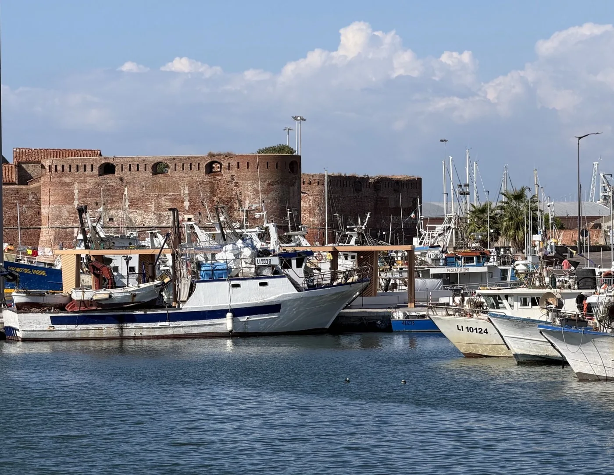
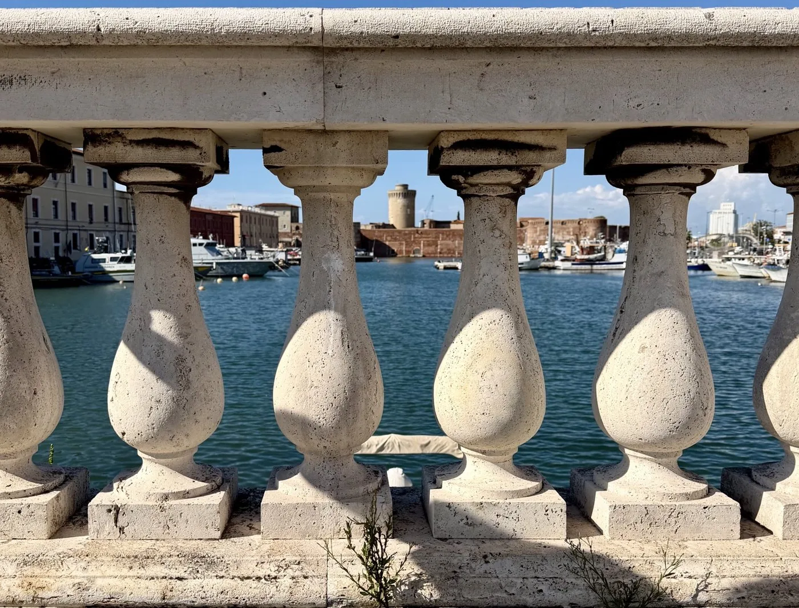
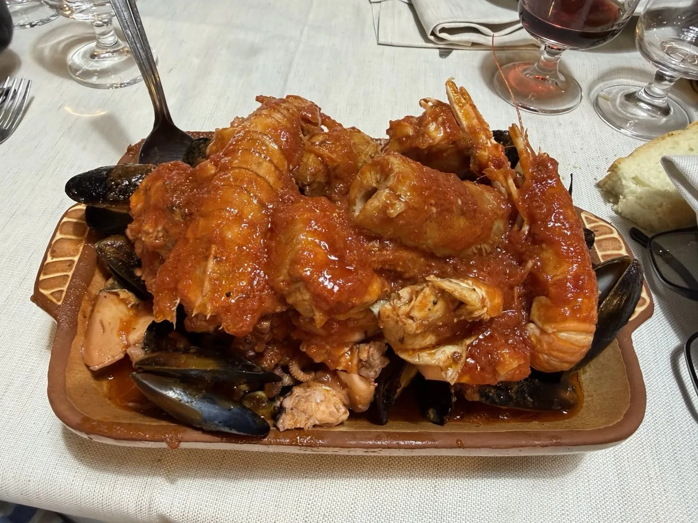
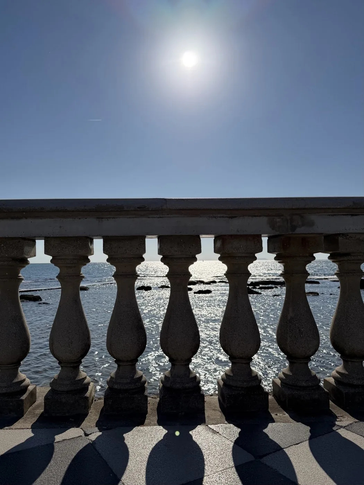

There are cities you choose for a monument, others for a view. And then there are the ones you choose because you want to taste something that truly belongs to that place. For me, Livorno meant cacciucco, its famous fish stew.
So we planned a day trip with the Triride, putting together history, the harbour, good food and a walk by the sea.
This is exactly what I write about on Travelling on my wheels: real days, tested on my own wheels. Where you can go, where you can get in, where to find an accessible toilet and all those little things we wish we had known before setting off.
For me, accessibility means being able to truly live a place, without having to give up the beautiful things.
Starting from Piazza Unità d’Italia
We left the car in Piazza Unità d’Italia and from there set off with the Triride to explore the centre.
Accessibility · Parking
There are spaces reserved for disabled people. Livorno town council’s rules also allow free parking in the blue (paid) bays if you display the disabled parking badge: we made use of this.
Canals, fortresses and the harbour
We followed the Fossi Medicei, the old Medici canals, crossed the characterful Venezia quarter and carried on towards the Fortezza Nuova.
Canals, bridges, boats and old fortifications: a lively, seafaring Livorno that we discovered at our own pace.
The Venezia quarter has a charm all of its own: the water goes along with you and the bridges keep opening up new views. The boats moored along the canals, the buildings overlooking the water and the brick walls tell the story of Livorno’s bond with the sea. It’s a part of the city to discover slowly, looking around you.

A lovely surprise at the Fortezza Nuova
With the Triride we were even able to get inside the Fortezza Nuova. For me that really makes the difference: being able to live a place, not just admire it from outside.
Inside, I appreciated the park and the attention to accessibility: a platform lift takes you up to the café, while an outdoor ramp leads to the higher levels.
The great walls of the Fortezza Nuova frame the green spaces of the park. It’s lovely to go from the canals to the inside: the perspective changes and you find yourself in a peaceful place where greenery and old fortifications live side by side. The visit adds a nice chance to stop and look at the city from a different angle.
Accessibility
Fortezza Nuova: our experience
Access: we got in with the Triride. We found a platform lift for the café and an outdoor ramp to the higher levels of the park.
Toilet: there is an accessible toilet.
Our tour continued towards the Fortezza Vecchia and the harbour area, passing the Darsena Vecchia (the old dock) and the Monument of the Four Moors.
Here Livorno’s seafaring character comes through even more. The Fortezza Vecchia, overlooking the water, and the boats in the dock make up one of the city’s most characteristic views. Close by, the Monument of the Four Moors draws the eye with the contrast between the figure at the top and the four bronze figures at its base: a stop worth taking your time over.



Accessibility
The centre and the harbour: how we got on
Along the route we took, we didn’t come across any particular obstacles with the Triride. The route is just as doable with a manual wheelchair, ideally with a companion.
Cacciucco at last!
After the tour came the moment I had been looking forward to most. For lunch we chose Il Sottomarino and ordered cacciucco and scagliozzi (fried polenta slices).

And here I can say it without hesitation: outstanding! It was exactly what I had hoped to find, and the scagliozzi went with it perfectly.

Good to know before you go
Il Sottomarino
Entrance: there is a step. I had to unhook the Triride and use the manual wheelchair; my companion helped me get over it.
Toilet: there is no accessible toilet.
This is important information for deciding whether the restaurant suits your needs.
By the sea, at Terrazza Mascagni
After lunch we got back in the car and moved to the area around the Livorno Aquarium, to reach Terrazza Mascagni.
Parking: something we wish we had known
We drove straight into the paid car park in front of the Aquarium. Only afterwards did we spot the spaces reserved for disabled people near the entrance.
It’s one of those things I want to share on the blog: we make the mistakes, so the people who come after us can avoid them!
Good to know before you go
Aquarium area
During our visit we were shown four reserved spaces in front of the Aquarium entrance, with free parking for four hours if you display the badge.
Before driving into the paid car park, look for the reserved bays and check the current signs.
From the car park we reached Terrazza Mascagni: the great chequered floor, the balustrade, the sea in front of you and the wide open view.
The black and white chequerboard creates a pattern that leads your eye to the balustrade and then out to sea. The gazebo with its columns makes this space even more recognisable. It’s a wide view made of light, water and horizon, which invites you to slow down and simply enjoy the walk.
With the Triride I enjoyed the walk at my leisure. It’s one of those places where it’s worth stopping and not being in a hurry.

A break before heading home
After the walk we went back towards the Aquarium and stopped at Surfer Joe, near the Aquarium, for a drink.
Here we also found a precious convenience before getting back on the road.
Accessibility · Toilet
At Surfer Joe, near the Aquarium, we found an accessible toilet during our visit.
My “no surprises” summary
The things to remember, gathered here so they are easy to find.
| Item | Rating | Good to know |
|---|---|---|
| Parking in the centre | 5 out of 5 | Piazza Unità d’Italia: reserved spaces, and free parking in the blue bays too if you display the badge. |
| Centre and pedestrian route | 4 out of 5 | The route we tried is doable both with the Triride and with a manual wheelchair, ideally with a companion. |
| Fortezza Nuova | 5 out of 5 | We got in with the Triride; there is a ramp, a platform lift and an accessible toilet. |
| Terrazza Mascagni | 5 out of 5 | A walk enjoyed with the Triride; accessible toilet found at Surfer Joe, near the Aquarium. |
| Accessibility of Il Sottomarino | 3 out of 5 | A step at the entrance and help from my companion, after unhooking the Triride. No accessible toilet. |
| Cacciucco and scagliozzi at Il Sottomarino | 5 out of 5 | Outstanding cacciucco. |
Look for the reserved spaces before driving into the paid car park, and read the signs.
Accessible toilets we found
- Fortezza Nuova There is an accessible toilet.
- Il Sottomarino There is no accessible toilet.
- Surfer Joe, near the Aquarium Accessible toilet found during our visit.
Overall experience
5 hearts out of 5This story describes our experience with a wheelchair and Triride on Saturday 19 September 2026. Services, access and parking conditions can change: when planning your visit, check the latest information for each place.